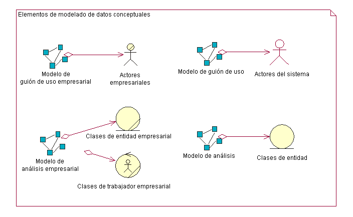
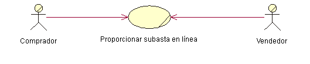
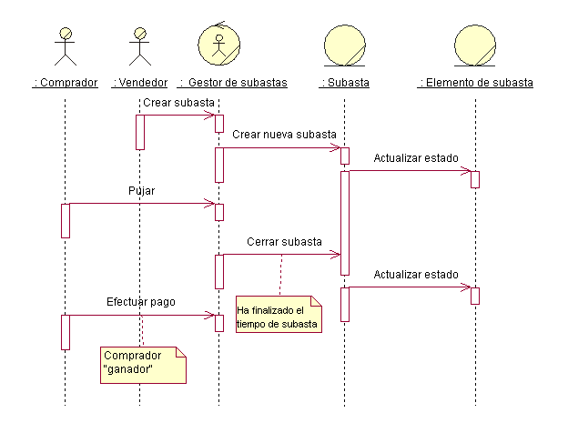
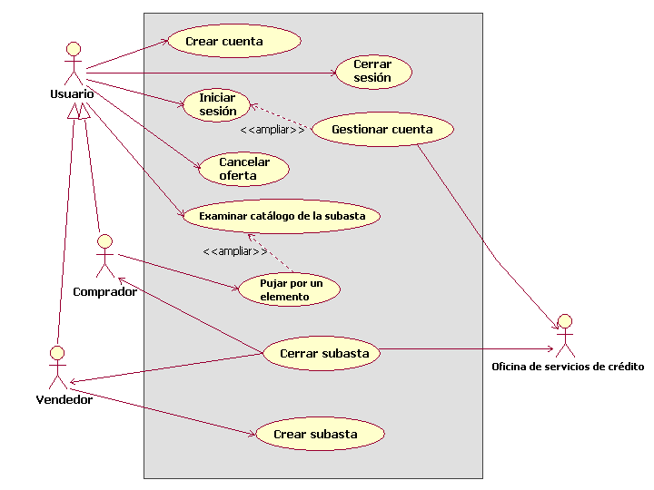

| Concepto: Modelado de datos conceptuales |
 |
|
| Elementos relacionados |
|---|
IntroducciónComo se define en [NBG01], el modelado de datos conceptuales representa la fase inicial del desarrollo del diseño de los datos permanentes y el almacenamiento de datos permanentes para el sistema. En muchos casos, los datos permanentes para el sistema los gestiona un sistema de gestión de bases de datos relacionales (RDBMS). Las entidades del sistema y empresariales que se identifican en un nivel conceptual de los modelos empresariales y los requisitos del sistema se desarrollarán durante las tareas de análisis de guiones de uso, de diseño de guiones de uso y de diseño de bases de datos hasta convertirse en diseños de tablas físicas detalladas que se implementarán en el RDBMS. Tenga en cuenta que el modelo conceptual de datos que se trata en este documento de conceptos no es un producto de trabajo independiente. Consiste en una vista compuesta de información contenida en productos de trabajo de modelado empresarial, requisitos y disciplinas de análisis y diseño que es importante para el desarrollo del modelo de datos. El modelo de datos suele evolucionar a través de las tres fases generales siguientes:
Las tareas relacionadas con el diseño de bases de datos abarcan todo el ciclo vital de desarrollo de software, y las tareas relacionadas con el diseño de bases de datos iniciales pueden iniciarse durante la fase inicial. En proyectos que utilizan el modelado empresarial para describir el contexto empresarial de la aplicación, el diseño de bases de datos puede iniciarse en un nivel conceptual con la identificación de actores empresariales y guiones de uso empresariales en el modelo de guiones de uso empresariales, y los trabajadores empresariales y entidades empresariales en el modelo de análisis empresarial. En proyectos que no utilizan el modelado empresarial, el diseño de bases de datos puede empezar en el nivel conceptual con la identificación de actores del sistema y guiones de uso del sistema en el modelo de guión de uso, y la identificación de clases de análisis en el modelo de análisis de las realizaciones de guiones de uso. La figura que aparece abajo muestra el conjunto de elementos del modelo conceptual de datos que residen en los modelos empresariales, los modelos de requisitos y el modelo de análisis.  Los apartados siguientes describen los elementos de los modelos empresariales, el modelo de guión de uso y el modelo de análisis que se puede utilizar para definir el modelo conceptual de datos para los datos permanentes del sistema. Elementos de modelado de datos conceptualesModelos empresarialesModelo de guión de uso empresarial El modelo de guión de uso empresarial consta de actores empresariales y guiones de uso empresariales. Los guiones de uso empresariales representan procesos empresariales clave que se utilizan para definir el contexto para el sistema que se va a desarrollar. Los actores empresariales representan entidades clave externas que interactúan con la empresa mediante los guiones de uso empresariales. La figura que aparece abajo muestra un ejemplo muy sencillo de modelo de guión de uso empresarial para una aplicación de subastas en línea.  Como entidades importantes para el problema de espacio del sistema, los actores empresariales son entidades candidatas para el modelo conceptual de datos. En el ejemplo anterior, los actores empresariales comprador y vendedor son entidades candidatas de las que la aplicación de subastas en línea debe almacenar información. Modelo de análisis empresarial El modelo de análisis empresarial contiene clases que modelan los trabajadores empresariales y las entidades empresariales identificadas en el análisis del flujo de trabajo del guión de uso empresarial. Los trabajadores empresariales representan a los trabajadores participantes que llevan a cabo las acciones necesarias para realizar dicho flujo de trabajo. Las entidades empresariales son "cosas" que utilizan o producen los trabajadores empresariales durante dicho flujo de trabajo. En muchos casos, las entidades empresariales representan tipos de información que el sistema debe almacenar permanentemente. La figura que aparece abajo muestra un diagrama de secuencia de ejemplo que representa a los trabajadores empresariales y las entidades empresariales de un caso de ejemplo de guión de uso empresarial titulado "Proporcionar subasta en línea" para gestionar una subasta.  En este ejemplo simplificado, el objeto de gestor de subastas representa un rol de trabajador empresarial que seguramente desempeñará el propio sistema de gestión de subastas en línea. La subasta y los objetos del elemento de subasta son entidades empresariales que utiliza o produce el gestor de subastas que actúa como agente para los actores empresariales vendedor y comprador. Desde la perspectiva de diseño de una base de datos, la entidades empresariales de subasta y elemento de subasta son entidades candidatas para el modelo conceptual de datos. Modelos de análisis y requisitosEn proyectos que no realizan modelado empresarial, los requisitos (guión de uso del sistema) y los modelos de análisis contienen elementos de modelo que se pueden utilizar para desarrollar un modelo conceptual de datos inicial. En proyectos que utilizan modelado empresarial, las relaciones y las entidades empresariales identificadas en los modelos de análisis empresarial se perfeccionan y se detallan en el modelo de análisis como clases de entidad. Modelo de guión de uso del sistema El modelo de guión de uso del sistema contiene actores del sistema y guiones de uso del sistema que definen las interacciones principales de los usuarios con el sistema. Los guiones de uso del sistema definen los requisitos funcionales del sistema. Desde la perspectiva del modelado de datos conceptuales, los actores del sistema representan entidades externas al sistema para las que puede que el sistema tenga que almacenar información permanente. Esto es importante en casos en los que el actor del sistema es un sistema externo que proporciona datos y/o recibe datos del sistema que se está desarrollando. Los actores del sistema se pueden derivar de los actores empresariales del modelo de guión de uso empresarial y los trabajadores empresariales del modelo de análisis empresarial. La figura que aparece abajo representa el modelo de guión de uso empresarial para el sistema de subastas en línea. En este modelo, los actores empresariales comprador y vendedor se derivan de un actor empresarial del usuario genérico. Se ha añadido un actor del sistema nuevo llamado Oficina de servicios de crédito para reflejar la necesidad de procesar los pagos a través de una entidad externa. Este nuevo actor del sistema es otra entidad candidata para el modelo conceptual de datos.  Modelo de análisis El modelo de análisis contiene las clases de análisis identificadas en las realizaciones de guiones de uso para los guiones de uso del sistema. Los tipos de clases de análisis que son de interés principal desde una perspectiva de modelado conceptual de datos son las clases de análisis de entidades. Como se define en la Directriz: Clase de análisis, las clases de análisis de entidades representan información gestionada por el sistema que se debe almacenar permanentemente. Las clases de análisis de entidades y sus relacionan forman la base del modelo de datos inicial para la aplicación. Las clases de análisis de entidades conceptuales del modelo de análisis pueden perfeccionarse y detallarse en clases de diseño permanentes lógicas del modelo de diseño. Estas clases de diseño representan tablas candidatas del modelo de datos. Los atributos de las clases son columnas candidatas para las tablas y también representan claves candidatas para ellas. Consulte la Directriz: Aplicación de ingeniería directa en bases de datos relacionales para ver una descripción de cómo se pueden correlacionar los elementos del modelo de diseño con los elementos del modelo de datos. |
© Copyright IBM Corp. 1987, 2006. Reservados todos los derechos. |